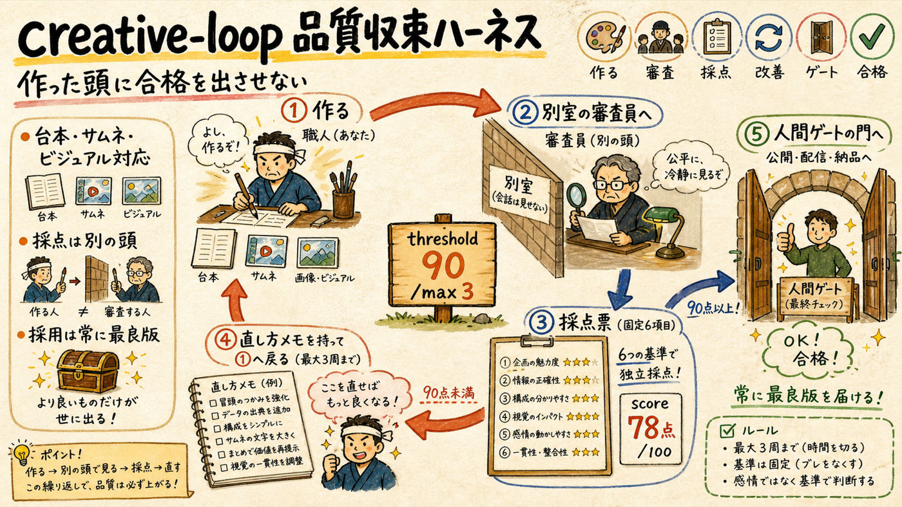
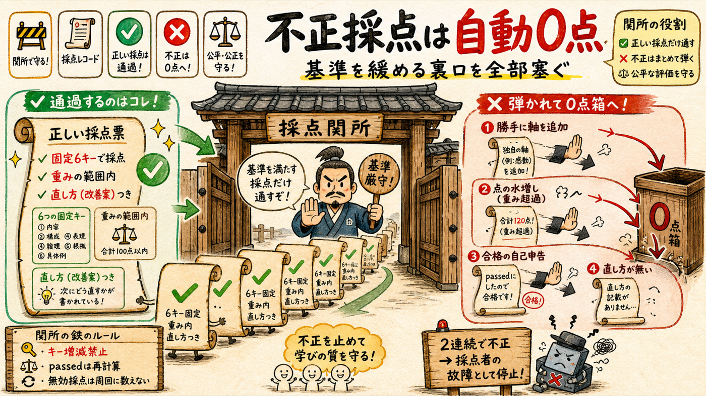

「作った頭が自分で合格を出す」を構造的に禁止し、生成物を fork独立採点で threshold 90 まで詰めるループを CLI として機械化しました。実サムネで1周 dogfood 済み・実バグ2件を独立採点で検出→修正済みです。
scripts/creative-loop.mjs = init → prompt（採点プロンプト決定論生成）→ record（採点検証・停止則）→ best（最良版採用）品質ループに必要なのは、採点表・独立採点者・停止則・最良版追跡の4部品。従来は全部「会話の空気」の中にあった。

# 1) ループ開始（元依頼が毎周再注入される錨になる） node scripts/creative-loop.mjs init essay-script content/053/full_script.json --request "ep33の台本..." # 2) 採点プロンプトを決定論生成 → まっさらな fork Agent へ（制作会話は見せない） node scripts/creative-loop.mjs prompt <id> # 3) forkの返答JSONを記録 → continue(直し方) / passed / max / plateau node scripts/creative-loop.mjs record <id> - # 4) 採用は常に最良版（最新版ではない） node scripts/creative-loop.mjs best <id>
対象は6種: essay-script（本編台本・新設）/ scene-visual（シーン画像・新設）/ thumbnail / title / long-hook / short-script。essay-episode スキルの工程に配線済みで、Step 2 台本・Step 5 画像・Step 8.5 タイトル・Step 9 サムネは合格版だけが人間ゲートに出ます。
ループが無限に回るか品質に収束するかの分かれ目は「採点者がいるか・直し方が返るか」。その採点自体の抜け道も機械で塞ぐ。

| 裏口 | 機械の対処 |
|---|---|
| 採点軸を勝手に増減して点を作る | breakdownキーがスキーマと完全一致しなければ0点扱い |
| 1軸に重み以上の点を盛る | 各軸 0〜weight 範囲外は0点扱い |
| 「passed: true」と自己申告する | 申告は無視。score ≧ threshold で必ず再計算 |
| 直し方を書かずに点だけ付ける | feedback欠落は0点扱い（直し方が返らないループは収束しない） |
| 採点者が壊れて周回だけ消費 | 無効採点は周回予算に数えない。2連続無効は judge_error（採点者側の故障として停止・ループは開いたまま） |
停止則は3+1: passed（合格）/ max_reached（3周未達→最良版採用＋目標を疑う）/ plateau（3周同点＝堂々巡り→採点軸か作り方を変える）/ judge_error（採点者故障）。成果物は毎周スナップショットされ、出力が確率的に悪化しても最良版が常に取り出せます。
仕組み自体も同じ思想で検証: 作った私ではなく、文脈ゼロのforkが実物を開いて採点した。
| 検証 | 結果 |
|---|---|
| dogfood（実運用1周） | ep32実サムネ(052.png)をforkが360px縮小まで作って実見 → 78点＋直し方3点（2行目が実測8字で規定7字超過 / 書体が明朝寄りで面の太さ不足 / 金雲と題字の焦点競合）。スナップショット・最良版追跡も動作 |
| 純関数テスト | test-creative-loop.mjs 11本PASS（不正形5種・plateau・passed再計算・無効採点の予算除外） |
| 独立採点（この構築自体） | 96/100 合格。採点者は自分でinit→不正/正常recordの実験まで実施。指摘された実バグ2件（plateau到達不能・無効採点が周回消費）は修正してテスト追加済み |
| 採点表の接地 | criteriaは全て実事故・実測から（写実化ドリフト・顔/キャラ意匠・画像内文字・冒頭7-18秒で40-45%離脱・処方箋が価値の本体 等） |
運用上の約束: このループは人間承認ゲートを置き換えません。合格版だけを人間に出すことで、あなたの時間を「ほぼ合格品の最終判断」に集中させるのが目的です。企画・台本提示・通し視聴の承認ゲートは従来どおりです。
creative-loop.mjs ＋ 採点表6種